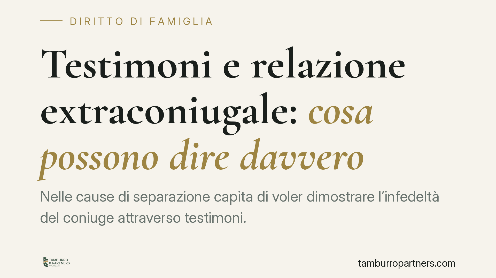

Testimoni e relazione extraconiugale: cosa possono dire davvero
Nelle cause di separazione capita di voler dimostrare l'infedeltà del coniuge attraverso testimoni. La giurisprudenza è netta: chi testimonia può riferire solo fatti concreti percepiti, non definire l'esistenza di una relazione extraconiugale. È il giudice a trarre la valutazione. Distinzione tecnica, ma con effetti pratici pesanti sull'esito del giudizio.

Il problema: chi qualifica il tradimento?
Nelle separazioni la prova dell'infedeltà resta uno dei punti più delicati. Molti pensano che basti portare in aula un amico o un conoscente pronto a dichiarare che il coniuge "aveva una relazione". Non è così.
La distinzione è semplice ma decisiva: il testimone riferisce fatti che ha percepito con i propri sensi, non giudizi o qualificazioni. Dire "aveva una relazione extraconiugale" è una conclusione, non un fatto. Spetta al giudice ricavare quella conclusione dai fatti descritti.
Inquadramento normativo
La regola nasce dalla disciplina della prova testimoniale nel processo civile. L'articolo 244 del Codice di procedura civile impone che la parte indichi "specificamente" i fatti su cui il testimone deve deporre, articolandoli per punti separati. La testimonianza serve a provare fatti, non a esprimere opinioni o valutazioni personali.
Su questa base i tribunali di merito hanno chiarito i confini. Il Tribunale di Milano, con pronuncia dell'ottobre 2013, ha ribadito che il testimone non può attestare l'esistenza di una relazione extraconiugale come "fatto", perché si tratta di una qualificazione riservata al giudice. Può invece descrivere circostanze oggettive: aver visto i due coniugi in atteggiamenti intimi, averli incontrati insieme in luoghi e orari precisi, aver assistito a episodi determinati.
È poi il giudice a valutare se quell'insieme di fatti integri o meno una violazione dell'obbligo di fedeltà previsto dall'articolo 143 del Codice civile.
Perché la differenza conta
La conseguenza pratica è concreta. Un capitolo di prova formulato male — cioè che chiede al testimone di confermare "la relazione" — rischia di essere dichiarato inammissibile. In quel caso la circostanza non viene provata, anche se il testimone sapeva molto.
Al contrario, capitoli costruiti su fatti specifici e verificabili reggono al vaglio del giudice e possono fondare l'addebito della separazione. L'addebito è la dichiarazione con cui il giudice attribuisce a uno dei coniugi la responsabilità della crisi, con effetti sul mantenimento e, in alcuni casi, sulla successione.
Attenzione però a un punto spesso trascurato: l'infedeltà, di per sé, non comporta automaticamente l'addebito. Occorre dimostrare che la violazione sia stata la causa della rottura del legame, e non una conseguenza di una crisi coniugale già in atto. La prova, quindi, deve mirare anche a collocare i fatti nel tempo, prima del deterioramento del rapporto.
Implicazioni per chi affronta una separazione
Chi intende far valere l'infedeltà deve ragionare in termini di fatti documentabili, non di etichette. Non serve un testimone che "sappia tutto": serve un testimone che abbia visto o sentito qualcosa di preciso e possa collocarlo nel tempo e nello spazio.
Le stesse cautele valgono per gli altri mezzi di prova: messaggi, fotografie, relazioni investigative. Anche in questi casi il materiale va organizzato come racconto di fatti oggettivi, lasciando al giudice la valutazione finale.
Va infine ricordato che la prova deve essere raccolta con mezzi leciti. Materiale ottenuto violando la privacy o attraverso condotte illecite rischia l'inutilizzabilità e può esporre a responsabilità.
Cosa fare in concreto
- Formulate i capitoli di prova su fatti specifici: luoghi, date, comportamenti percepiti direttamente dal testimone, evitando qualificazioni come "relazione" o "amante".
- Verificate la posizione dei testimoni: devono aver percepito personalmente i fatti; il "sentito dire" ha valore molto limitato.
- Collocate i fatti nel tempo: dimostrate che l'infedeltà è anteriore alla crisi coniugale, se volete puntare all'addebito.
- Raccogliete solo prove lecite: attenzione a intercettazioni, accessi non autorizzati e materiale riservato del coniuge.
- Fatevi assistere prima di agire: la costruzione della prova va impostata sin dall'inizio, perché un errore nei capitoli è difficilmente rimediabile in corso di causa.
---
*Contributo informativo a cura di Tamburro & Partners - Avv. Giuseppe Tamburro. Non costituisce parere legale.*
Ogni famiglia ha il suo equilibrio.
Separazione, divorzio, affidamento, assegno: se vuoi un confronto riservato su una specifica situazione, scrivi allo studio. Ti rispondiamo entro un giorno lavorativo.